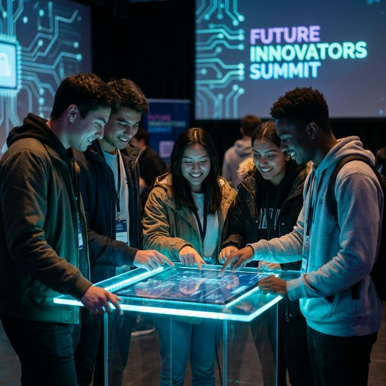
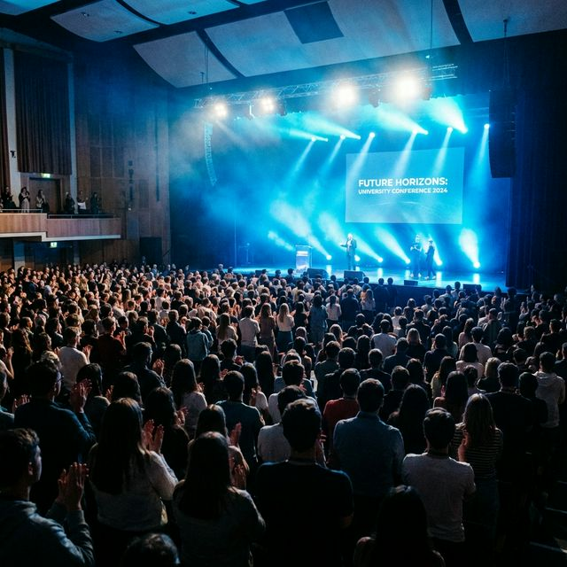

Co-Chair
Developer Summit '26 (FOSS Community UOK)
Currently serving as the Co-Chair for the highly anticipated Developer Summit '26, organized by the prominent FOSS (Free and Open Source Software) Community at the University of Kelaniya.
My role involves spearheading the core organizational efforts, managing a large-scale student committee, engaging with industry-leading guest speakers, and ensuring the summit provides an unparalleled, immersive technical learning experience.
Key Responsibilities:
- Setting the strategic vision and technical roadmap for the 2026 Developer Summit.
- Coordinating logistics, program management, and technical infrastructure across multiple teams.
- Partnering with major tech organizations and open-source advocates to secure resources and leading speakers.
Event Gallery

